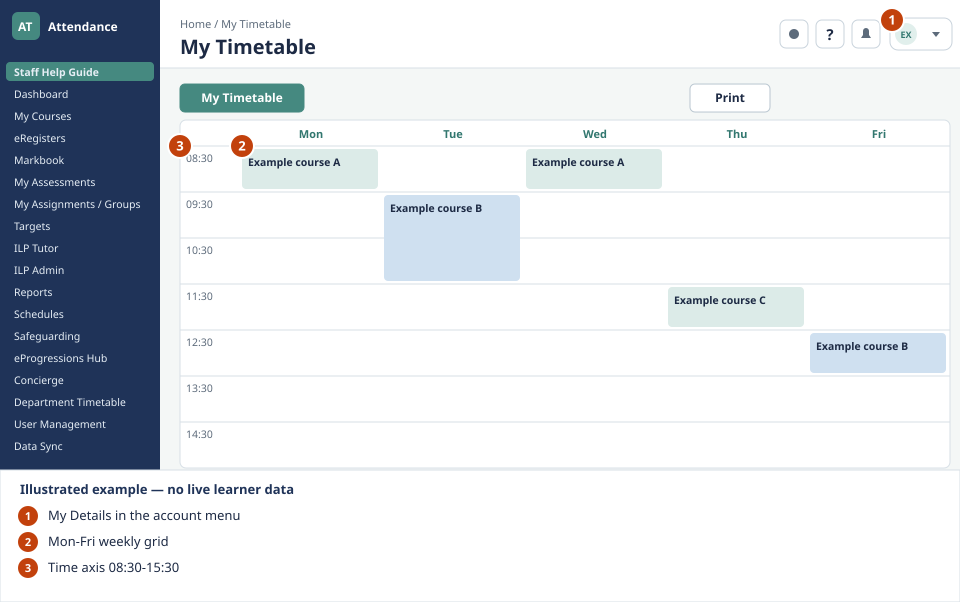

Daily work
My Timetable
What to look for

- My Details in the account menu. Open your account menu at the top right and choose My details, then My Timetable.
- Mon-Fri weekly grid. Each lesson sits on the time axis at its actual time.
- Time axis 08:30-15:30. Read the start and end of each lesson from the left-hand times.
From My Details, tap the My Timetable button to see a full Mon–Fri calendar view of your personal weekly schedule. Lessons are shown on a live time axis (08:30–15:30) so you can see exactly when each lesson falls. Shared Morning Meetings for Head of Department entries appear automatically for all HoD users.